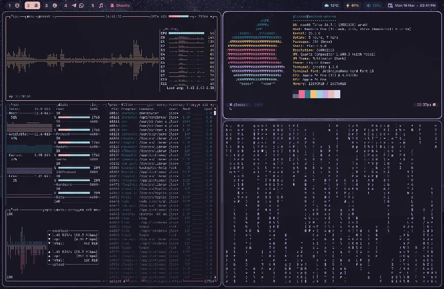
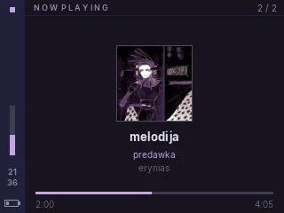
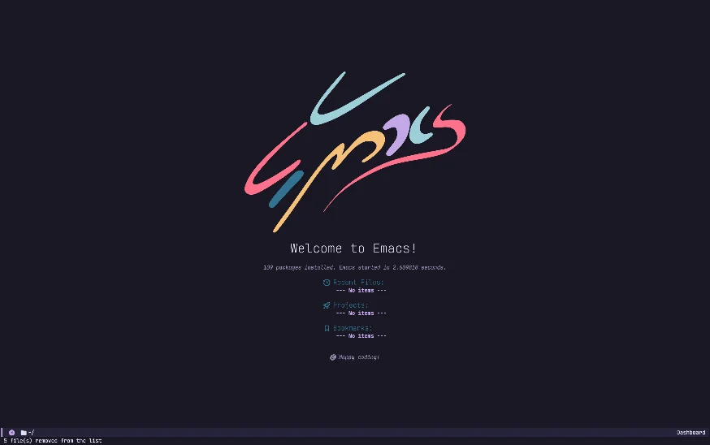
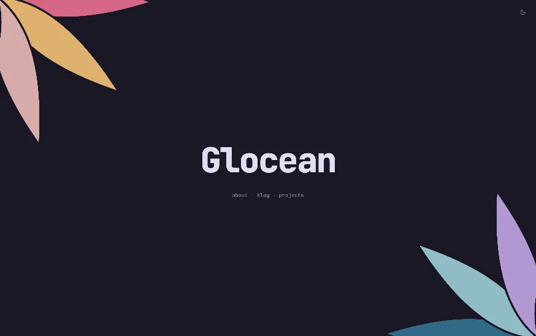

All of my projects, big and small. Click the cards to go to the repo.

Minimal macOS dotfiles with automatic light/dark mode switching.

A clean Rosé Pine theme for Rockbox that does not use any beatmaps.

Elegant, no-distraction Emacs configuration with evil-mode and a custom Rosé Pine theme.

A framework-free personal site in vanilla HTML, CSS, and JS.